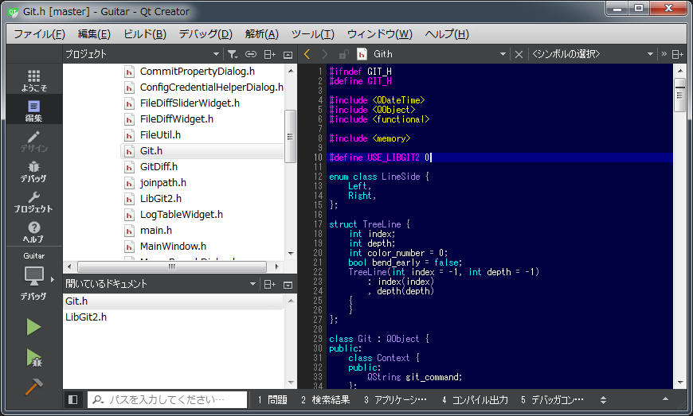

Guitarをビルドする
開発言語はC++、GUIフレームワークは Qt 5 を使用しています。
最初にコンパイラを準備します。
Windows
- Microsoft Visual C++ 2013 以降
- 無料のExpress版も使用可能です。その場合、「for Windows Desktop」と書かれているものをインストールします。
macOS
- Xcode
Linux
- GCC
Qtのダウンロードサイトからお使いのOSに合ったQt SDKをダウンロードし、インストールします。
とりあえず
Qtが初めての方のために、基本的な使い方を紹介します。Windows、macOS、Linuxのいずれでもほとんど同じです。
Qt Creator を起動します。

[新しいプロジェクト] ボタンを押し、 [Qt ウィジェットアプリケーション] を選択します。

[名前]の欄に“Test”、[パス]には、作業用フォルダの場所を入力します。

筆者の場合、都合により、複数のキットを使い分けていますが、初めての場合は、一つだけ表示されていると思います。使用するキットのチェックボックスをONにして、右上の [詳細] をクリックします。 [プロファイル] は必要ないので、チェックボックスをOFFにします。（ONのままでも実害はないので、そのままでもいいです）

生成されるクラス名を確認します。ここの設定はそのままで、次へ進みます。

プロジェクト作成の最終確認です。問題なければ [完了] ボタンを押します。

左下の三角ボタンを押すと、ビルドが開始し、成功したらプログラムが実行されます。

最初のアプリケーションが完成しました。

環境設定
Qt Creator の設定を行います。[ツール] → [オプション] を選択すると、オプションダイアログが開きます。

デフォルト設定では、ファイル名は「lowercase」な名前になりますが、Guitarでは「UpperCamelCase」なファイル名を採用していますので、[ファイル名を小文字にする] というチェックボックスをOFFにします。

[ビルドと実行] の [一般] タブにある、 [既定のビルドディレクトリ] の設定を変更します。
Windowsの場合“../_build_%{CurrentProject:Name}”にします。これはグローバルの設定なので、変えたくない場合は、後でプロジェクトの設定で“../_build_Guitar”などにします。

LinuxやmacOSの場合、ビルドディレクトリは 「../_build_%{CurrentProject:Name}_%{CurrentBuild:Name}」がおすすめです。そのような設定にすると /home/<username>/develop/_build_Guitar_Release|Debug の様になります。

一応、次のようなコーディングスタイルを採用しています。
- ハードタブ（半角4文字幅推奨）
上に挙げたのは、グローバルの共通設定ですが、プロジェクト毎にも設定箇所があります。

[エディタ]の設定、[コードスタイル]の設定を確認します。
ソースコードを取得する
作業用フォルダを作成します。各自好みの場所で構いません。筆者の場合、Windowsでは C:\develop 、Linuxでは /home/soramimi/develop としています。
Guitarとzlibを同じ階層に配置します。
- C:\develop
- Guitar
- zlib
Guitar
 https://github.com/soramimi/Guitar にアクセスします。
https://github.com/soramimi/Guitar にアクセスします。

右にある[Clone or download]を押すと、ソースコードを取得するためのアドレスが表示されます。
HTTPSを使用する場合
C:\develop>git clone https://github.com/soramimi/Guitar.git
SSHを使用する場合
C:\develop>git clone git@github.com:soramimi/Guitar.git
zlib
同じ要領で、zlibもクローンします。
C:\develop>git clone https://github.com/madler/zlib.git
ビルドの準備
prepare.rb
バージョン情報やリソーススクリプトを自動生成するための prepare.rb というスクリプトファイルがあります。Qt Creator でプログラム本体をビルドする前に、このスクリプトを実行しておく必要があります。実行にはRubyが必要です。
C:\develop\Guitar>ruby prepare.rb
以下のファイルが作成されます。
- version.c … バージョン情報ダイアログボックスで表示する値を定義します
- win.rc … Windows用のバージョン情報を定義します
- Info.plist … macOS用のバージョン情報を定義します
プロジェクトを開く
Qt Creator の「ようこそ」の画面で、右上の[プロジェクトを開く]ボタンを押します。
クローンした場所に、 Guitar.pro があります。 libgit2.pro というのは後述しますが、とりあえず関係ありません。

zlibのビルド
zlib.pro を開き、ビルド（Ctrl+B）を実行します。デバッグ版とリリース版を作成します。
（追記 2017-02-02） Qt SDK 同梱の zlib を使用するようにしましたので、zlibを単独でビルドする必要はなくなりました。
Guitarのビルド
Guitar.pro を開き、 Qt Creator の左にある三角ボタンを押すか、Ctrl+R（実行）を押すと、ビルドと実行が行われます。ビルドだけして、実行したくない場合は、Ctrl+Bを押します。デバッガ上で実行するには、デバッグ開始ボタンかF5キーを押します。
失敗する場合
よくあるのが、prepare.rbを実行し忘れて、 version.c が見つからないというエラー。前述した「ビルドの準備」の操作を行うと version.c が作成されます。自動では行われないので、手作業でやる必要があります。
追加したソースがコンパイルされないとき
version.c を生成した場合もそうですが、リポジトリから pull したら新しいファイルが追加されていたときや、新しいクラス（のファイル）を追加したとき、そのままビルドすると、増えたファイルがコンパイルされずに、いろいろ見つからないというエラーが出ることがあります。そんなときは、Qt Creator の [ビルド]→[qmake の実行] を行ってください。追加したファイルがビルドされない問題は、大抵これで解消されます。

libgit2対応
アプリケーションとリンクして利用するための libgit2 というライブラリがあります。これを使ってみようと挑戦しましたが、libgit2でfetch/push/pullなどの通信を行う処理を実装する方法が分からず、挫折しました。一応プロジェクトファイル libgit2.pro は作ってありますので、ライブラリをビルドするだけなら可能です。
作業用フォルダ（例 C:\develop\）に移動します。
C:\>cd C:\develop
クローンします。
C:\develop>git clone https://github.com/libgit2/libgit2.git
Qt Creator から libgit2.pro を開きます。
ビルドディレクトリは、Windowsの場合 C:\develop\_build_libgit2 とします。

Ctrl+Bを押してビルドします。必要に応じて [デバッグ] と [リリース] を両方ビルドします。
この時点で、下記のようなフォルダ構成になっているものと想定します。
Windowsの場合
- C:\develop
- _build_Guitar
- debug
- release
- _build_libgit2
- debug
- release
- _build_zlib
- debug
- release
- Guitar
- libgit2
- zlib
- _build_Guitar
Linuxの場合
- /home/<username>/develop
- _build_Guitar_Debug
- _build_Guitar_Release
- _build_libgit2_Debug
- _build_libgit2_Release
- _build_zlib_Debug
- _build_zlib_Release
- Guitar
- libgit2
- zlib
Guitar.pro を開くと、libgit2をリンクする設定がコメントアウトされています。
#INCLUDEPATH += $$PWD/../libgit2/include #win32:Debug:LIBS += $$PWD/../_build_libgit2/debug/libgit2.lib #win32:Release:LIBS += $$PWD/../_build_libgit2/release/libgit2.lib #unix:debug:LIBS += $$PWD/../_build_libgit2_Debug/liblibgit2.a #unix:release:LIBS += $$PWD/../_build_libgit2_Release/liblibgit2.a
これらのコメントを外して、[ビルド]→[qmake の実行]を行います。
Git.h を開き、USE_LIBGIT2 の定義を 1 にすると、libgit2対応に関するソースがコンパイルされるようになります。

途中まで作って挫折したソースは LibGit2.cpp/hです。これらを Git.cpp の中から呼び出していますが、条件コンパイルで無効にしています。